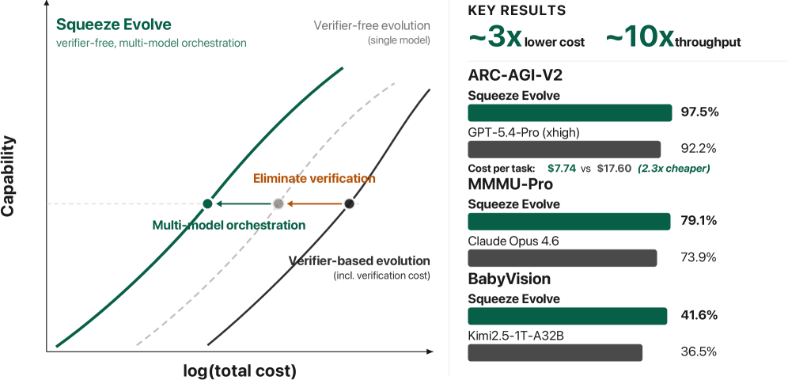
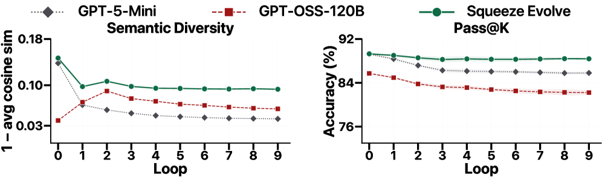
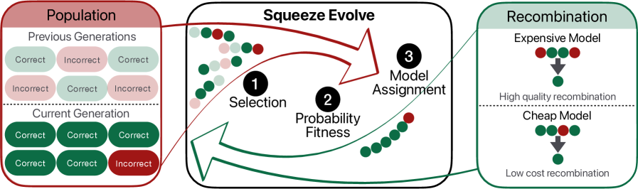
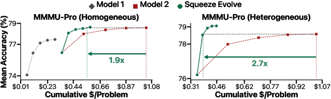
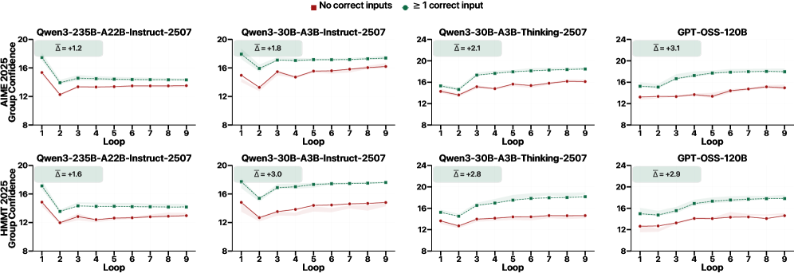

测试时计算扩展已是从单次推理走向搜索和精炼的有效手段。但现有方法要么依赖外部验证器（增加系统复杂度），要么滥用昂贵模型（快速消耗预算）。我们发现了无验证器进化的一个根本瓶颈：多样性崩塌。 没有外部验证器，循环只能放大当前模型已经「知道如何识别」的轨迹：过于狭窄的搜索坍缩从根本上限定了可达到的最好结果。Squeeze Evolve的解决方案是将每种进化算子路由到最适合的模型，实现成本-能力前沿的系统性左移。
许多看似不同的测试时方法可以统一到一个演化框架中。对于一个查询Q，初始化一个种群P(0)，使用祖先函数对候选解采样。每轮选择器select根据适应度信号f挑选出K个群组，重组器recomb对每组中的候选执行交叉/变异，产生新种群。最终种群由一系列算子组合推导而来。
在这个框架下，majority voting是退化的单步过程（一次采样→聚类→选取最大簇）；self-refinement是每步混洗-选择-变异循环；RSA是10步的噪声鲁棒聚合迭代。这个统一视角揭示了共同的设计空间和共同的瓶颈。
论文通过全面实证分析揭示了三个关键洞察。
第一，多样性崩塌。 在同一模型上反复运行开放循环进化，候选解的多样性（以pairwise embedding距离衡量）在几轮内急剧下降，pass＠K上限也随之坍缩。Squeeze Evolve通过多模型路由保持了多样性，曲线平坦且高。
第二，Pass＠K的天花板。 无验证器时，循环只能放大模型已知的轨迹方向，不能逃逸局部最优。token预算的增加可以部分弥补无验证问题：通过多样化的生成和迭代聚合，但上限仍由初始种群质量决定。
第三，祖先函数主导最终精度。 实验结果清晰地说明：使用GPT-OSS-120B作为祖先函数 + GPT-OSS-20B做重组，获得89% 准确率；颠倒角色则降至66%。初始种群的质量是最终精度的最强预测因子，而非中间的推理能力。 聚合质量不如初始化重要：4条正确轨迹混合1条错误，最好模型也仅83%；但4条来自较弱模型的正确轨迹却能达到95%。

算法在三个核心算子间执行模型路由。初始化所有N个候选从最强模型M2（如Claude Opus 4.6或GPT 5.4）采样，因为初始质量主导最终结果。适应度信号从模型自身的输出派生，无需外部评分。Group Confidence (GC) 基于top-K_token对数概率的平均值：当预测分布集中时，top-K值的和接近1，熵低；Self-Consistency (SC) 基于种群内答案一致性频率。

三档重组路由： 最高适应度的群组由M2做深层次精炼；中等适应度群组由M1做标准交叉；最低适应度群组由M1仅做变异。这种策略确保昂贵计算的聚焦。论文验证了GC在各种基准上与任务得分的强斯皮尔曼秩相关：正确轨迹的置信度一致高于错误轨迹。Group Confidence本身就能在不同模型间正确路由轨迹。
路由本身不够，部署必须与评分机制和服务基础设施协同设计。延迟匹配服务： M1和M2部署在独立GPU池中，大小调整使它们在每次循环中大约同时完成，避免任何一池成为瓶颈。

评分引擎： Self-confidence几乎免费：生成时已产生所需对数概率。Cross-confidence使用小型评分模型执行单次前向传播。引擎将前向传播与batch scoring融合，相比逐次推理实现9-15× 加速。路由开销仅占端到端延迟的1.9-6.8%。
所有实验使用N=16、K=4、T=10轮循环。成本以实际API美元计。
数学与编码： AIME 2025上Qwen3-30B Instruct→Thinking路由将成本降低47-69%，精度基本持平。GPQA-Diamond上Mixed (GPT-OSS-120B + Gemini 3.1 Pro) 在76.3% 精度下成本降至 $0.4/problem，同等精度比RSA低60%。LiveCodeBench V6在 $0.2/problem低预算下，路由比RSA高12分。

多模态视觉（MMMU-Pro）： 异构路由（Claude Opus 4.6 Gemini 3.1 Pro → GPT 5.4）在126.3小时到达78.9% 精度，RSA仅67.1%：在1.5× 的时间下实现11.8分的提升。
ARC-AGI-V2： Squeeze Evolve在Gemini 3.1 Pro + GPT 5.4上达到80.8% 正确率，超过单个GPT 5.4（72%）和Gemini 3.1 Pro（72%），接近Gemini Pro 84% 的验证器辅助水平。
科学发现（Circle Packing）： GPT-OSS-120B + Gemini 3.1 Pro获得3.9586（满分4.0），超过所有已知基线：首次无验证器方法在科学发现任务上达到可验证方法水平。

参考：https://arxiv.org/abs/2604.07725